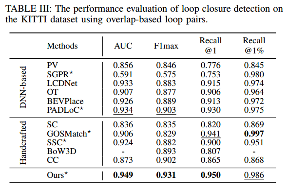
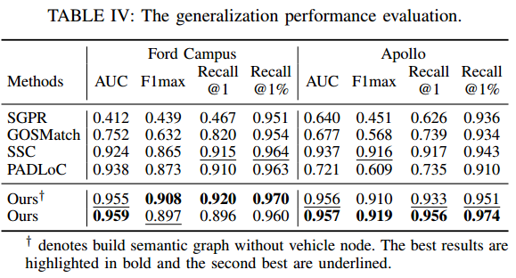
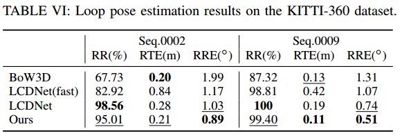
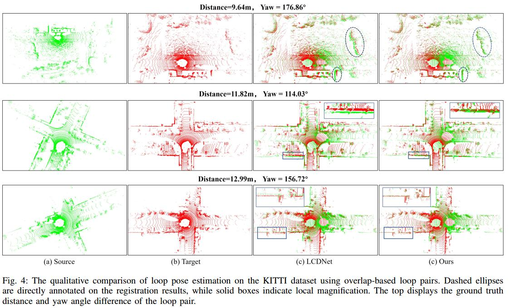

1:National University of Defense Technology, 2:Hunan University
Loop closing is a crucial component in SLAM that helps eliminate accumulated errors through two main steps: loop detection and loop pose correction. The first step determines whether loop closing should be performed, while the second estimates the 6-DoF pose to correct odometry drift. Current methods mostly focus on developing robust descriptors for loop closure detection, often neglecting loop pose estimation. A few methods that do include pose estimation either suffer from low accuracy or incur high computational costs. To tackle this problem, we introduce SGLC, a real-time semantic graph-guided full loop closing method, with robust loop closure detection and 6-DoF pose estimation capabilities.
Visualization of loop closing using our method.
(a) Loop closure detection, it shows a reverse loop on the KITTI 08 sequence found by our approach even with significant changes in the position and orientation.
(b) Semantic node correspondences for geometric verification and initial loop poses estimation. The blue lines indicate the node correspondences and red spheres represent the estimated instance center.
(c) Final alignment for loop correction.
SGLC takes into account the distinct characteristics of foreground and background points. For foreground instances, it builds a semantic graph that not only abstracts point cloud representation for fast descriptor generation and matching but also guides the subsequent loop verification and initial pose estimation. Background points, meanwhile, are exploited to provide more geometric features for scan-wise descriptor construction and stable planar information for further pose refinement. Loop pose estimation employs a coarse-fine-refine registration scheme that considers the alignment of both instance points and background points, offering high efficiency and accuracy. We evaluate the loop closing performance of SGLC through extensive experiments on the KITTI and KITTI-360 datasets, demonstrating its superiority over existing state-of-the-art methods. Additionally, we integrate SGLC into a SLAM system, eliminating accumulated errors and improving overall SLAM performance.
SGLC Framework. The framework of SGLC. It first builds a semantic graph for foreground instances and then generates LiDAR scan descriptor considering both the topological properties of the semantic graph and the appearance characteristics of the background. The LiDAR scan descriptor is utilized to retrieve loop candidate scans from the database. Following this, geometric verification is performed on each loop candidate to filter out false loop closure, with the key step utilizing the instance node descriptors for robust sparse node matching. Finally, a coarse-fine-refine registration scheme is employed to estimate the precise 6-DoF pose.
We evaluate our method on KITTI and KITTI-360 datasets. Additionally, Ford Campus and Apollo datasets are used to test its generalization ability KITTI includes 11 sequences with ground truth poses, among which six sequences (00, 02, 05, 06, 07, 08) contain loop closures and sequence 08 contains reverse loop closures. KITTI-360 is composed of 9 sequences, with 6 of them containing loops. Compared to KITTI, KITTI-360 has a greater number of loop closures and reverse loop closures. We use the semantic information from a SegNet4D on both datasets and mainly build semantic graphs from static vehicle, pole and trunk instances, and utilize background points from building, fence, road and vegetation. This is convenient for replacing or adding other semantic information. All the experiments are conducted on a machine with an AMD 3960X @3.8GHz CPU and a NVIDIA RTX 3090 GPU. More implementation details can be found in our open-source repository.
Our method outperforms SOTA on multiple sequences and achieves the best average F1max score and $EP$ for the KITTI dataset. Specifically, for sequence 08 with many reverse loop closures, our approach still exhibits superior performance, proving its good rotational invariance. And on the KITTI360 dataset, our method remains competitive. Additionally, we report the average runtime for all methods, including descriptor generation and loop closure determination. Our method performs as fast as handcrafted methods while achieving superior performance in most cases, demonstrating both efficiency and effectiveness.
Furthermore, to investigate the loop closure detection performance at further distances, we followedregarding two LiDAR scans as a loop closure when their overlap ratio is beyond 0.3, which indicates that the maximum possible distance between them is around 15\,m. And we adopt the same experimental setup as theirs to evaluate our method on the KITTI 00 sequence using AUC, F1max, Recall@1, and Recall@1% as metrics. The results are shown in tabel. Due to BoW3D leaning more towards geometric verification, we are unable to generate its AUC and recall@1% results from its open-source implementation. From the results, our method significantly outperforms SOTA baselines in terms of overall metric, indicating its robustness.
To evaluate the generalization capability of SGLC, we conducted additional experiments on the Ford Campus and Apollo datasets, focusing on loop pairs with an overlap ratio greater than 0.3. We primarily compared semantic-assisted methods to assess their adaptability to scene semantic changes or label quality declines. Due to the page limitation, we show the semantic segmentation details in our online supplementary. As shown in the table, our method demonstrates the best performance on both the Ford Campus and Apollo datasets, highlighting its strong generalization capability. When the quality of semantic segmentation declines, some instances may be partially segmented, but after clustering, they still form a single object, which does not affect the construction of our semantic graph. Once the semantic graph is built, the LiDAR scan descriptors retrieve multiple candidate scans, including the correct loop scan. Through our geometric verification via graph matching, the true loop closure is identified. Besides, for short-term loop closing in SLAM, static vehicles can serve as valuable feature nodes to enhance loop detection.
As shown on the table, Our method achieves the best loop pose estimation performance on both distance-based loop pairs and more challenging overlap-based loop pairs. Initially, both LCDNet and our method achieve a 100% RR for distance-based loop pairs. However, for overlap-based loop pairs, LCDNet's performance declined, while our method still maintains superior registration capabilities, demonstrating its robustness for viewpoint changes. In terms of alignment accuracy, our method also significantly outperforms other baselines. We also report the average running time of pose estimation on our machine. From the comparison, our method boasts the fastest running speed. The total runtime of our system, incorporating semantic segmentation, loop closure detection and poses estimation, is 98.1ms, less than the data acquisition time of 100~ms for a typical rotational LiDAR sensor, thereby rendering it suitable for real-time SLAM systems
tab:loop_correction_kitti360 shows the results on the KITTI-360 dataset with distance-based close loop. It can be observed that LCDNet exhibits the best generalization ability, but our method remains competitive and has the best alignment accuracy, considering both RTE and RRE.
We also present the qualitative results. As can be seen, our method achieves better alignment even in low overlap loop closure, attributing to the semantically-guided coarse-fine-refine point cloud alignment process.
The trajectory of A-LOAM odometry (left) compared to with integrating BoW3D loop closing method (middle) and integrating our approach (right) on the KITTI 00 sequence.
We integrate our method into the A-LOAM odometry to eliminate cumulative errors for evaluating the accuracy of SLAM trajectories, and compare the results with baseline integrated with BoW3D.
We utilize a Incremental Smoothing and Mapping iSAM2 based pose-graph optimization PGO framework to build a factor graph for managing the the keyframe poses.
If a loop closure is detected, we will add this loop closure constraint into the factor graph to eliminate errors and ensure global consistency.
As shown in picture, we present the trajectory error analysis between keyframe and ground truth poses.
From the results, our method significantly enhances the SLAM system by reducing the cumulative odometry error, and shows superior performance compared to the baseline that incorporates BoW3D. This improvement is attributed to the excellent loop closing capability of our approach.
This paper presents a semantic graph-guided approach for LiDAR-based loop closing. It initially builds a semantic graph of the foreground instances, which serves as the foundation for descriptor generation and guides subsequent steps in geometric verification and pose estimation. The designed LiDAR scan descriptor leverages both the semantic graph's topological properties and the appearance characteristics of the background point cloud, thereby enhancing its robustness in loop closure detection. For loop pose estimation, we proposed a coarse-fine-refine registration scheme that considers the alignment of both instance points and background points, offering high efficiency and accuracy. The proposed method supports real-time online operation and is convenient for integration into SLAM systems, particularly semantic SLAM. The experimental results on different datasets demonstrate its superiority.
This paper presents a semantic graph-guided approach for LiDAR-based loop closing. It initially builds a semantic graph of the foreground instances, which serves as the foundation for descriptor generation and guides subsequent steps in geometric verification and pose estimation. The designed LiDAR scan descriptor leverages both the semantic graph's topological properties and the appearance characteristics of the background point cloud, thereby enhancing its robustness in loop closure detection. For loop pose estimation, we proposed a coarse-fine-refine registration scheme that considers the alignment of both instance points and background points, offering high efficiency and accuracy. The proposed method supports real-time online operation and is convenient for integration into SLAM systems, particularly semantic SLAM. The experimental results on different datasets demonstrate its superiority.